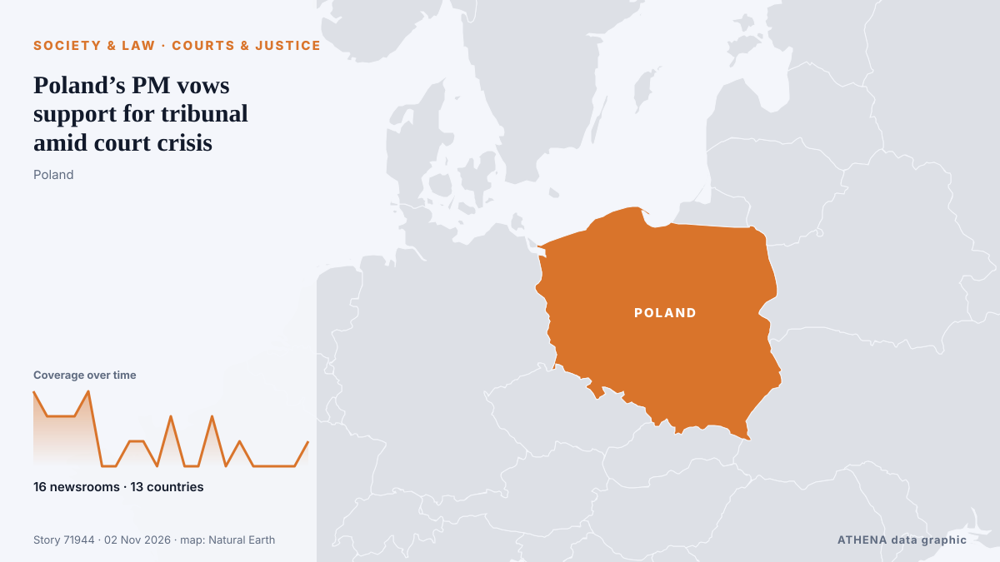

Justice et tribunaux
SponsoriséPrésenté par  Cybernetics and Artificial Intelligence Lab Welcome to the Cybernetics and Artificial Intelligence Laboratory, established at the Department of Business Administration of the National
Cybernetics and Artificial Intelligence Lab Welcome to the Cybernetics and Artificial Intelligence Laboratory, established at the Department of Business Administration of the National
| 20 oct. | 0 |
|---|---|
| 21 oct. | 0 |
| 22 oct. | 0 |
| 23 oct. | 0 |
| 24 oct. | 0 |
| 25 oct. | 0 |
| 26 oct. | 0 |
| 27 oct. | 1 |
| 28 oct. | 2 |
| 29 oct. | 4 |
| 30 oct. | 8 |
| 31 oct. | 6 |
| 1 nov. | 2 |
| 2 nov. | 1 |
Les titres sont affichés en anglais, tels que publiés.

Poland’s PM vows support for tribunal amid court crisis
Riot police have been guarding the court since Friday afternoon, with several hundred protesters gathered to demand the reinstatement of the president of the country’s Constitutional Tribunal. de Sydney Morning Herald
Judge says xAI must face NAACP lawsuit on data center pollution
The legal battle revolves around the AI company's operations in southern Memphis. de Engadget
Brussels sides with Donald Tusk in Poland’s court crisis
The confrontation has attracted a response from France's Marine Le Pen and Slovenia's Janez Janša. de Euractiv
Sinn Féin and SDLP welcome Taoiseach's plan to create new body to examine Irish unity
It’s understood the Taoiseach will bring a memorandum before Christmas proposing a new body to examine Ireland’s constitutional future, including Irish unity. de TheJournal.ie
Poland's Constitutional Court crisis deepens as judges allege coup attempt
Poland has been plunged into a constitutional confrontation after police entered the Constitutional Tribunal and its president was reportedly suspended from office, prompting allegations of a coup… de AzerNews
Polish president calls crisis talks after court standoff
Karol Nawrocki cut short a trip to Senegal and returned to Warsaw. de Euractiv
Delta Goodrem impresses judges again with ‘sensational’ Halloween week routine
Singer Goodrem scored 33 for her Viennese waltz. de The Irish News (Belfast)
Polish riot police deployed after court chief suspended
The court frequently ruled in favour of Polish legislation over European Union law. de Euractiv
Polish president Nawrocki pushes his way into top court amid rule-of-law tussle
Karol Nawrocki made his way through protesters around midnight in the latest escalation of his conflict with Prime Minister Donald Tusk. de Politico Europe
Syrian Hacker Behind Fake Tweet That Triggered $136 Billion Market Drop Gets 42 Months in Prison
Ahmad Umar Agha, a Syrian Electronic Army hacker known online as "Th3Pr0," has been sentenced by a U.S. federal court to 42 months in prison for his role in a hacking conspiracy that targeted Western… de The Hacker News
Poland's president returns as court crisis escalates
Polish President Karol Nawrocki turned back to Poland while en route to Senegal after a far-right ally was suspended as head of the country's top court. de RTÉ News
Iran court sentences award-winning filmmaker Jafar Panahi to 5 years in prison
The 66-year-old won the top prize in the 2025 Cannes film festival for It Was Just An Accident. de The Straits Times
Thailand extends activist’s jail term to more than 34 years
A Thai court has sentenced activist Arnon Nampa to an additional two years in prison, bringing his total sentence to over 34 years. de Arab News
Judge opens East Potomac Park probe into potential DOJ misconduct
A federal judge has opened an investigation into concerns that the Trump administration lied to her in the ongoing legal battle over President Trump’s desire to redevelop East Potomac Golf Links. de The Hill
French shooting suspect deliberately targeted Muslims and Africans, says prosecutor
A man suspected of a gun attack in the Paris suburbs last week, killing one person and wounding seven including a child, has admitted to "targeting individuals who appeared to be Muslim or African,"… de The Local France
Mushroom killer Erin Patterson emotionless as appeal dismissed
Mushroom killer Erin Patterson is likely to die behind bars after Victoria’s Court of Appeal quashed her bid to overturn her triple murder conviction. de Sydney Morning Herald
Bayer Wins Roundup Weedkiller Cancer Trial While Awaiting Settlement Ruling
Bayer won a trial over claims by three women that its Roundup weedkiller caused their cancer, while awaiting a broader ruling from a separate court on the company’s $7.25 billion effort to settle… de Insurance Journal
Russia's legal siege over assets continues, costing Euroclear hundreds of millions of euros in 2026
Euroclear is facing "multiple proceedings in Russian courts," including a case launched by the Russian Central Bank that seeks to challenge the immobilization of its assets. de Kyiv Independent
Abu Dhabi court jails 8 for life over arms supplies to Sudanese Army
Yasser Al Atta, Salah Gosh, Othman Al Zubair, five others sentenced to life imprisonment in arms trafficking, money laundering case. de Gulf News